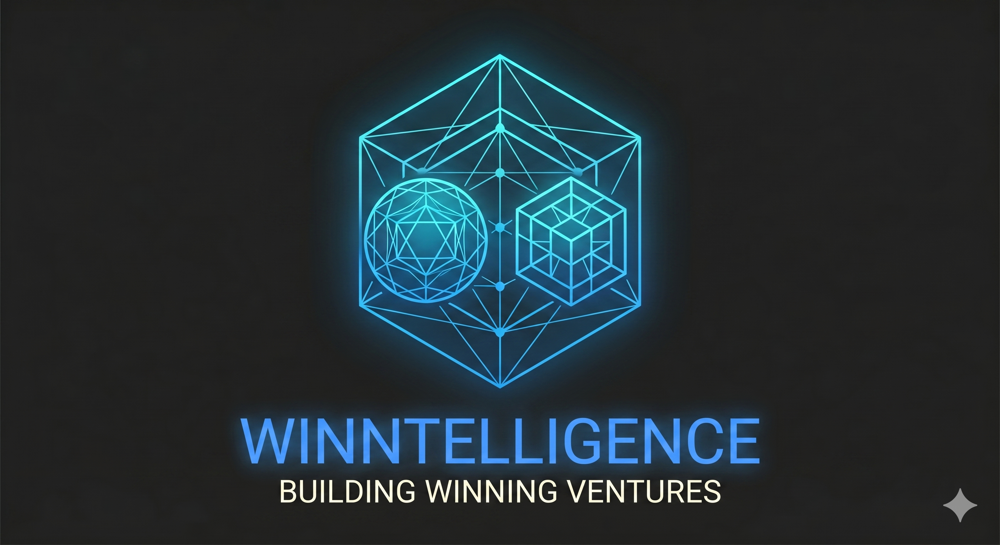

Winntelligence is the central repository to compile, orchestrate, and manage your automated ventures.
Connected operational data pipelines from X, Substack, and Reddit directly into the repository infrastructure to track real-time market signals.
Developing secondary validation layers to automatically check data accuracy before records are saved to a venture file.